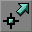

Keeping Brushes Snapped To The Grid
World of boxes is not the most interesting map. So we want to add more shapes, and that involves more complicated BSP's. So we rotate them, add or subtract in different ways, to make creative enviroinment we want. For example, some begginer mapper created a room by adding polygonal brush and subtracted rotated rectangular brush for entrance:
That may work just fine as long as he does not have any other geometry around. But in more complicated map there must be more geometry around, and when he starts adding it, he will found that lots of brushes starts overlaping each other (yes, i saw maps like that):
As we all know, UED goblin doesn't like that. In worst cases UED may even crash when rebuilding BSP, but lucky ones will only get some random BSP holes (i know, random is fun  ).
).
Actually, sollution is simple, as long as you keep ALL vertexes of ALL brushes snapped to grid. Compare these pictures with previous ones:
![[brushaligngood]](images/brushaligngood.jpeg)
If you align all brushes like that, without them intersecting each other, you can almost forget about BSP holes. If you still get holes anyway, make sure all sides of brushes are planar. Also, you will soon find that it is much easier to add more BSP around well aligned brushes and to texture it.
Few notes on how to do that easily:
- You can select several vertices at once in rectangular area (in vertex editing mode ), by holding Ctrl+Alt+Left Mouse Button.
- Right click on one of selected vertices to align all of them to grid.
- When you need to move already aligned vertices (in vertex editing mode), always do that with Ctrl OR Ctrl+Shift to keep them snaping to grid.
Thats all. Its hard to fix already big map with brush-jungle in it, but it is easy to make everything right from begining.
Discussion
Olympus Mons: Awsome stuff this should be a tooltip for unreal ed. I didnt know this.
Nercury: I was right when i thought that someone does not know this
Nercury: Keeping brushes on grid mainly helps because that ensures that all sides of brush are planar... (i guess). Can anyone confirm this? I just wrote this from my own experience, because making maps this way never caused any holes in it. BTW, all sides of antiportals also MUST be planar, so aligning vertices to grid helps here too.
Nercury: Ok, i have spend some time trying to create BSP hole, i used two intersecting brushes. I was unable to create any hole with not planar cube faces (geometry was very simple though), but i was very succesfull as soon as i turned off Snap To Grid feature. So my conclusion is: align, align, and align.
StarWeaver: In generic mode (camera mode? whatever the editor starts in), right clicking a vertex of any selected brush or set of selected brushes will both set the pivot to that vertex and snap that vertex to the nearest grid point (dragging along the entire selection). It's really helpful when I import a builder brush or insert a prefab and it decides to place it at some random off-grid or on-some-other-grid location.
Also, I don't understand that note about making sure to hold control while vertex editing. I *HAVE* to hold down control when moving *ANYTHING* in the editor regardless of grid settings, unless I'm missing something?
Nercury: I guess yes, unless your Unreal Editor works well... If you notice, that vertexes do not snap to grid when moving them, just hold ctrl